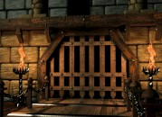
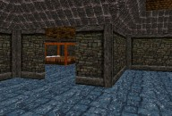
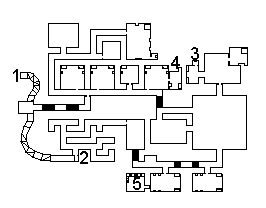

| Warlords Fortress | |
| 1. | Entrance |
| 2. | The big door will NOT open, there is a secret one to the left of it, in there magical doors will warp you around a bit. |
| 3. | The Discharge Papers that Osric Temper wants as proof. |
| 4. | This is one of the may places to find large sums of money. |
| 5. | This is a hidden room with plenty of treasure, thanks to Godfather for pointing it out. |
This one makes up for the easieness in the other two dungeons in Silver Cove. There are many veterans and soldiers here, but there are also Knights. Doom, Death, and Cuisinart Knights. They look very cool. Like Yoshimitsu in Tekken 3 for those of you who have played that.
The Cuisinart have close to or more than 1,000 hit points, so be prepared for a bit of a battle as they are never alone. I belive there were only five in the entire dungeon, but this seemd to occupy most of my time.
Leave us a message mgrounds@hotmail.com